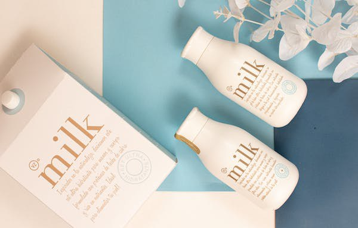
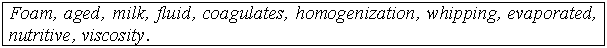

Lesson 17
UNIT 3
Livestock processing technology
BASIC PROCESSING TECHNOLOGIES OF ANIMAL PRODUCTS

Milk and dairy products production
Learn the active vocabulary of the Lesson and be ready to
use it in your further work:
Composition
of milk – склад молока; dairy
products – молочні продукти; contain
v – містити; constituents
– складові; digestible
adj – легкотравний; digestive
adj – травний; digestion
n – травлення; calcium
n – кальцій; vary
v – змінюватись; soluble
salts – розчинні солі; sodium
chloride – сода, хлористий натрій; potassium
chloride – хлористий калій; insoluble
adj – нерозчинний; emulsifying
agent – речовина, що утворює емульсію; mixture
n – суміш; cream
(sing) n – вершки; fat
content – склад жиру; separate
v – відділяти (ся); acidity
n – кислотність; churn
v – збивати масло; whipping
cream – збиті вершки; whole
milk – незбиране молоко; dry
milk – сухе молоко; cocondensed
milk – згущене молоко; sour
cream – сметана; butter
milk – маслянка, сколотини; curd
(s) – cheese сир; determine
v – визначати, зумовлювати; coagulated
adj – коагульований; pastereurized
adj – пастеризований; lactic
acid – молочна кислота; whey
n – сироватка; milk
rennet – згортання молока; yogurt
n – йогурт; skimmed
milk – збиране молоко; margarine
n – маргарин; ice
cream – морозиво; flavouring
n – ароматизатор; sweetener
n – наповнювач (підсолоджувач); kefir
n – кефір; fermenting
milk – ферментуюче молоко; canned
adj – консервований; cultured
milk foods – кисломолочні продукти.
Read
and translate the text:
MILK
AND DAIRY PRODUCTS The
great importance of milk in the diet is due to that fact that it contains most
of the essential food constituents in easily digestible form. It represents the
best source of calcium, a good source of vitamins A, B complex and C, and
contains fat, sugar, proteins, and, in smaller amounts, all the other essential
minerals. Composition
of milk.
The average percentage of water is 87. The carbohydrates are lactose, which is
held in solution along with the minerals as soluble salts. The fat (butter fat)
is emulsified, part of the protein of the milk acting as emulsifying agent. The
yellow colour of milk is due to the colour pigment of the fat, which, in turn,
is derived from the green food eaten by the cow.The principal proteins are
casein and albumin. Casein is probably a mixture of compound proteins, the
phosphoproteins, and is in part associated with calcium as calcium caseinate.
The mixture of casein and calcium.caseinate is often called coseinogen.
Cream.The
cream of milk is best separated by a centrifuge, which may be so
regulated
that cream of any desired fat-content may be obtained. Cream contains the same
constituents as milk, but in a very different proportion. It resembles milk in
many of its properties. Cream intended for retailing is usually of two grades –
heavy or whipping cream and coffee cream. Whipping cream must contain not less
than 30 percent of fat and coffee cream not less than 18 percent. Cheeses.The
curd of milk which has undergone changes in its composition through the growth
of microorganisms is a fair definition of cheese. Most cheeses are
made
from the acid curds. All cheeses may be considered as rich sources of proteins
and minerals, especially calcium. Butter.If
cream is whipped or churned for a long time, the fat globules combine, and fat
separates out in lumps which include some of the proteins, milk sugar and salts
with a considerable quantity of water adhering. This mass is essentially butter.
All butters contain a high percentage of vitamin A, the amount varying with the
breed of cattle and the season of the year. Ice
creamis
made from milk, milk solids, cream, flavourings, and sweeteners. Nuts
and fruits are sometimes added. Ice cream is higher in calories than milk.
Yogurtis
made by fermenting milk (whole, skim, or low-fat milk or milk solids) with
different strains of bacteria. Most commercial yogurts are low in fat and high
(20%) in galactose. But more than half the weight of some yogurts consists of
added sugar and fruits. Dairy or related products also include filled and
+imitation dairy products (for example, filled cheese). Most filled products
contain milk solid and nonbutter fat; they come in forms such as cheese and
canned milk. An imitation dairy product is one that resembles real milk
products, especially in flavour and cooking characteristics, but does not
contain any milk solids. Instead, it contains nondairy ingredients. In
the last few years, the consumption of dairy products has declined for various
reasons. Technology has created a large number of nutritious beverages. The
threat of high blood cholesterol and obesity has also played a role; many
consumers use dairy substitutes instead. In addition, many people are still
ignorant about the value of milk. GRAMMAR
EXERCISES
I.
Answer the following questions:
1.
What does milk contain? 2.
What can you say about the composition of milk? 3.
What milk products do you know? 4.
How may the cream of milk be obtained? 5.
How are coffee and whipping creams differentiated from each other? 6.
What percentage of fat is desirable for a whipping cream? 7.
What properties and conditions are essential to whipping cream? 8.
What is most of the butter on the market made from? 9.
What kinds of animals were domesticated for dairy purposes? 10.
Why is it important for man to consume cow milk daily? 11.
What factors influence milk composition? 12.
Is milk as rich in proteins as meat? 13.
What are the main two proteins in milk and why are they important? 14.
What minerals is milk rich in?
II.
Fill in the gaps using the following words:

1.
The optimum amount of fat for a _______ cream is 30 to 35 per cent. 2.
A cream which is warm or which is not sufficiently aged will whip to butter, as
the fat is not sufficiently firm to form a stabilized _______. 3.
A 20 per cent cream may be made to pour like 40 per cent cream by ________, a
process in which the fat clusters are greatly reduced in size and greatly
increased in number. 4.
A high fat cream which has _______ and is cold whips faster. 5.
Milk and ________ products are available in many forms. 6.
Fresh _______ milk is almost always pasteurized. 7.
________, dry, frozen, condensed, and fermented milk (butter milk and yoghurt)
is used in preparation of food. 8.
Long cooking at high temperatures _________ some protein, causes an offflavour
in the milk, and caramelizes the lactose that is; it decomposes or breaks it
down into simpler compounds. 9.
You can use dry milk in addition to fluid milk to increase the _______ value.
10.
Higher ________ increases the whipping properties of cream.
III.
Match the word with its definition:
IV.
Group the words below under the following headings:
V.
Put
the infinitives in brackets in the Past Continuous Tense. Make
the sentences interrogative and negative according to the
model:
Model: Children
were drinking milk with
cookies the
whole evening. Questions: Were
children
drinking milk with cookies the whole evening? (general). What
were children
drinking with cookies the whole evening? (special). Were
children drinking milk with cookies or juice with cookies the whole
evening? (alternative). Children
were drinking milk with cookies the whole evening, were not they? (disjunctive).
Negatives: Children
were not
drinking
milk with cookies the whole evening. 1. At the same time two years ago we (to visit) the conference on
dairy products in Ukraine. 2. While I (to type) my report everyone left the
office. 3. Helen (to make) milk chocolate when her children came home from
college. 4. Students (to listen to) the profeccor about the great importance of
milk in the diet when the bell rang. 5. Tom (to plan) to buy some kinds of
cheese but forgot his wallet at home. 6. My mother (to think of) cooking a milk
pudding but we wanted some pizza. 7. Students (to hope) to write a control test
on schedule but the lesson was over.
VI.
Translate into English:
1.
Молоко містить всі необхідні для підтримки життя речовини, що
добрезасвоюються організмом. 2. Білки молока містять всі
незамінні амінокислоти. 3. Більш ніж 50 % мінеральних речовин у молоці складають
солі кальцію іфосфору. 4. В молоці містяться вітаміни А, D,
Е, С, В1, В2, В6. 5. За способом обробки молоко випускають пастеризоване,
стерилізоване, вітамінізоване, іонітне, обезжирене. 6. Вершки – це молочний
продукт, що містить підвищений відсоток жиру. 7. Кефір – це один із найбільш
розповсюджених харчових продуктів. 8. Кефір готують із незбираного і знежиреного
молока. 9. Сир – це молочнокислий продукт, що має високу поживну та
енергетичнуцінність. 10. Сметана – це молочнокислий продукт, який отримують при
ферментизації вершків і наступному їх дозріванні.
VII.
Read the text and make up 5-7 questions:
MILK Cow
milk is the most complete of all foods having nearly all the constituents
of
nutritional importance to man, though it has little iron and vitamins C and D.
There is not any other product of animal origin having such an amount of
carbohydrate, in the form of disaccharide lactose. It is a very good source of
vitamins A, B, C, of calcium. Milk contains fat, sugar, proteins and all the
other minerals. Any
person needs about half a litre every day, of which an increasing proportion
consists of skimmed and semi-skimmed products. In a mixed diet milk is valuable
for its content of high quality protein, and is a rich source of
riboflavin. Whole
milk can be a good source of energy, which is particularly important
for
young children. Skimmed or semi-skimmed milks may be useful for those who drink
a lot of milk and who wish to reduce their fat intake. Milk
is widely used by man. It can serve as a basis for many important foods.
It
is a basic product for the preparation of such products as butter, different
kinds of cheese, cakes, some kinds of bread and sweets.
VIII.
Decide whether the following statements are true or false:
1.
Cow milk has all the nutrients necessary for man. T/F 2.
Cow milk has a lot of iron and vitamin C. T/F 3.
Cow milk does not have much carbohydrate in the form of disaccharide
lactose.
T/F 4.
Milk is a good source of calcium and other minerals. T/F 5.
Every person needs a litre of milk every week. T/F 6.
Milk for grown-up people must be skimmed or semi-skimmed, and whole milk can be
recommended for young children. T/F 7.
Milk contains high quality protein, and is a rich source of riboflavin.
T/F 8.
Milk is not used for the preparation of bread and biscuits. T/F
IX.
Find in the text “Milk” the English equivalents of the following
word: Combinations: a)
найбільш повний;
b) який має майже усі поживні складові частини,
важливі для людини;
c) не існує жодного іншого продукту;
d) у формі дисахариду лактози;
e) високоякісний білок;
f) більша пропорція;
g) змішана дієта;
h) що особливо важливо;
i) скоротити споживання жиру.
X.
Answer the questions to the text “Milk”:
1.
Does cow milk have all the constituents of nutritional importance for man?
2.
What nutrients and vitamins does milk contain? 3.
In a mixed diet milk is valuable for its content of high quality protein, isn’t
it? 4.
Do they recommend skimmed and semi-skimmed milk products in a daily diet for
adults? 5.
Which milk is recommended for young children? 6.
Is milk a basic product for the preparation of some breads, cakes and dairy
products? 7. What dairy (milk) products do you know?